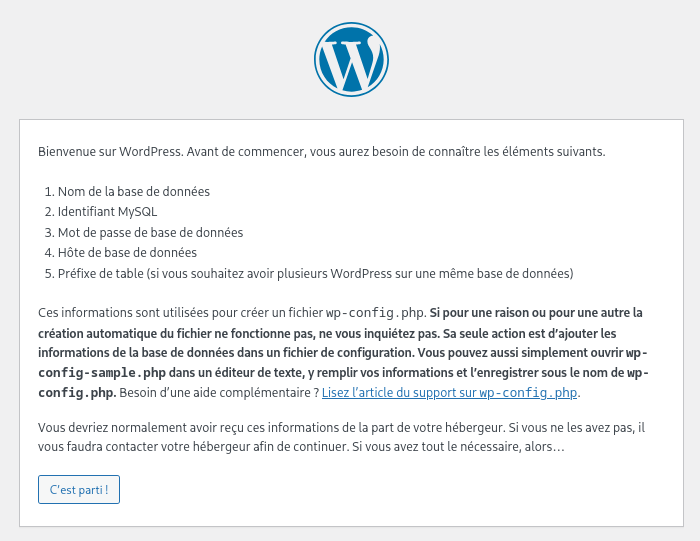
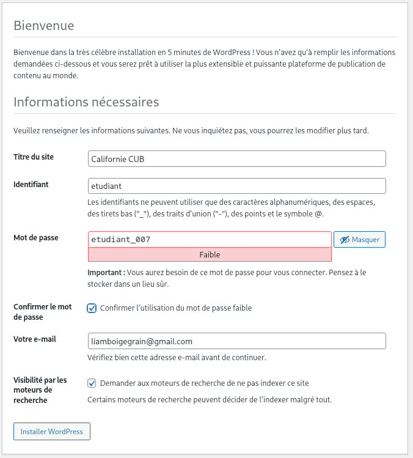
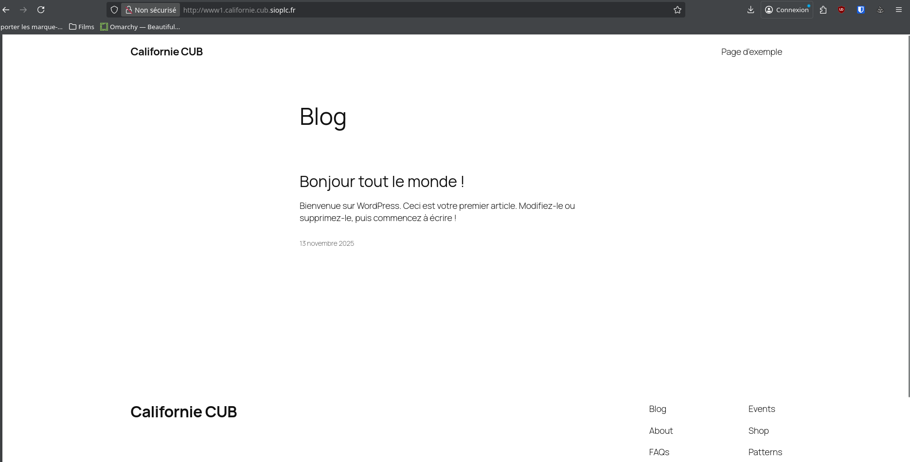

Installation serveur WEB¶
Mise à jour de Packet Tracer¶

Configuration des serveurs :¶
Mise à jour du système et installation des paquets nécessaires¶
sudo apt update && sudo apt upgrade -y
sudo apt install zip apache2 php mariadb-server php-mysql libapache2-mod-php
Configuration du VirtualHost WordPress¶
<VirtualHost *:80>
ServerName www1.californie.cub.sioplc.fr
DocumentRoot /var/www/wp
DirectoryIndex index.php
<Directory "/var/www/wp">
Options -Indexes
AllowOverride All
Require all granted
</Directory>
ErrorLog ${APACHE_LOG_DIR}/error-wp.log
LogLevel warn
CustomLog ${APACHE_LOG_DIR}/access.log combined
</Virtualhost>
Désactivation de la configuration par défaut et activation du site WordPress¶
Configuration DNS (Bind9)¶
Ajout des enregistrements A :¶
@ IN SOA ns0.californie.cub.sioplc.fr. admin.californie.cub.sioplc.fr. (
2025110602 ; Serial
1D ; Refresh
1H ; Retry
1W ; Expire
3H ) ; Negative Cache TTL
; Déclaration des serveurs DNS faisant autorité sur la zone tours.tierslieux86.fr à l’aide de
; l’enregistrement NS.
californie.cub.sioplc.fr. IN NS ns0.californie.cub.sioplc.fr.
californie.cub.sioplc.fr. IN NS ns1.californie.cub.sioplc.fr.
; Déclaration des correspondances entre un nom de domaine et une adresse IP à l’aide de l
; ’enregistrement A. Il est indispensable de déclarer les correspondances pour les serveurs DNS (nsx).
ns0 IN A 192.168.3.10
ns1 IN A 192.168.3.11
www0 IN A 192.36.3.20
www1 IN A 192.36.3.21
Redémarrage :¶
Installation de WordPress¶
Création de la base de données¶
sudo mysql
CREATE DATABASE wp_www0_californie_cub;
CREATE USER 'etudiant'@'localhost' IDENTIFIED BY 'etudiant_007';
GRANT ALL PRIVILEGES ON wp_www0_californie_cub.* TO etudiant@localhost;
FLUSH PRIVILEGES;
Déploiement des fichiers WordPress¶
sudo unzip latest.zip -d /var/www/wp
cd /var/www/wp
sudo mv wordpress/* /var/www/wp/
sudo rm wordpress/ -Rf
sudo chown -R www-data:www-data /var/www/wp/
Installation Web (interface WordPress)¶
Aller sur votre serveur, ici http://192.36.3.21 :
Choisir votre langue :¶

Pré-requis base de données¶

Informations de connexion BD¶

Confirmation réussite¶

Création du compte admin¶

Confirmation installation¶

Connexion administration WordPress¶

Mise à jour de l’URL du site dans les réglages WordPress¶

Le site fonctionne :¶

Installation du scanner¶
Ajout des CNAME dans Bind9¶
@ IN SOA ns0.californie.cub.sioplc.fr. admin.californie.cub.sioplc.fr. (
2025111301 ; Serial
1D ; Refresh
1H ; Retry
1W ; Expire
3H ) ; Negative Cache TTL
; Déclaration des serveurs DNS faisant autorité sur la zone tours.tierslieux86.fr à l’aide de
; l’enregistrement NS.
californie.cub.sioplc.fr. IN NS ns0.californie.cub.sioplc.fr.
californie.cub.sioplc.fr. IN NS ns1.californie.cub.sioplc.fr.
; Déclaration des correspondances entre un nom de domaine et une adresse IP à l’aide de l
; ’enregistrement A. Il est indispensable de déclarer les correspondances pour les serveurs DNS (nsx).
ns0 IN A 192.168.3.10
ns1 IN A 192.168.3.11
www0 IN A 192.36.3.20
www1 IN A 192.36.3.21
scanner0 IN CNAME www0
scanner1 IN CNAME www1
Vérification¶
; <<>> DiG 9.20.15 <<>> scanner0.californie.cub.sioplc.fr
;; global options: +cmd
;; Got answer:
;; ->>HEADER<<- opcode: QUERY, status: NOERROR, id: 22730
;; flags: qr rd ra; QUERY: 1, ANSWER: 2, AUTHORITY: 0, ADDITIONAL: 1
;; OPT PSEUDOSECTION:
; EDNS: version: 0, flags:; udp: 65494
;; QUESTION SECTION:
;scanner0.californie.cub.sioplc.fr. IN A
;; ANSWER SECTION:
scanner0.californie.cub.sioplc.fr. 43200 IN CNAME www0.californie.cub.sioplc.fr.
www0.californie.cub.sioplc.fr. 39531 IN A 192.36.3.20
;; Query time: 88 msec
;; SERVER: 127.0.0.53#53(127.0.0.53) (UDP)
;; WHEN: Thu Nov 13 10:43:10 CET 2025
;; MSG SIZE rcvd: 97
Installation du scanner web¶
Configuration du VirtualHost du scanner¶
<VirtualHost *:80>
ServerName scanner1.californie.cub.sioplc.fr
DocumentRoot /var/www/command-attack
DirectoryIndex index.php
<Directory "/var/www/command-attack">
Options -Indexes
AllowOverride All
# --- Restriction IP ---
<RequireAll>
Require ip 192.168.3.192/28
# --- Authentification Basic ---
AuthType Basic
AuthName "Zone protégée"
AuthUserFile /etc/apache2/sites-available/scanner1.htpasswd
Require valid-user
</RequireAll>
</Directory>
ErrorLog ${APACHE_LOG_DIR}/error-wp.log
LogLevel warn
CustomLog ${APACHE_LOG_DIR}/access.log combined
</VirtualHost>
sudo htpasswd -c /etc/apache2/sites-available/scanner1.htpasswd etudiant
New password: etudiant_007
Re-type new password:
Adding password for user etudiant
Activation :¶
Site fonctionnel :¶